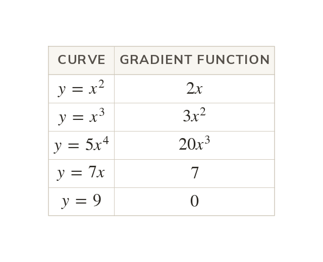

The power comes down and drops by one
The gradient function dy/dx gives the gradient at every point. For the power comes down and drops by one.
The gradient function dy/dx gives the gradient of the curve at every point. For dy/dx : the power multiplies and then drops by one.